전기공사산업기사 (2012-05-20 기출문제)
1과목: 전기응용
1. 다음 전동기 중에서 속도변동률이 가장 큰 것은?
- 3상 유도 전동기
- 3상 권선형 유도 전동기
- 3상 동기 전동기
- 단상 유도 전동기
(정답률: 79%)

2. FL-20D 형광등의 전압이 100[V], 전류가 0.35[A], 안정기의 손실이 5[W]일 때 역률은 약 몇 [%]인가?
- 57
- 65
- 71
- 85
(정답률: 76%)
3. 다음 중 전해정제법이 이용되고 있는 금속 중 최대 규모로 행하여지는 대표 금속은?
- 구리
- 철
- 납
- 망간
(정답률: 93%)
4. 직접저항 가열방식은 다음 중 어느 원리를 이용한 것인가?
- 아크손
- 유전체손
- 줄열
- 히스테리시스손
(정답률: 83%)
5. 터널 다이오드의 용도로 다음 중 가장 널리 사용되는 것은?
- 검파회로
- 스위칭 회로
- 정류기
- 정전압 소자
(정답률: 78%)
6. 열차가 곡선 궤도를 운행할 때 차륜의 프런치와 레일 두부간의 측면 마찰을 피하기 위하여 내측 궤조의 궤간을 약간 넓히는 것을 무엇이라 하는가?
- 구배
- 유간
- 고도
- 확도
(정답률: 68%)
7. 어느 쪽 게이트에서든 게이트 신호를 인가할 수 있고, 역저지 4극 사이리스터로 구성된 것은?
- SCS
- GTO
- PUT
- DIAC
(정답률: 76%)
8. 전지의 국부작용을 방지하는 방법은?
- 감극제
- 완전밀폐
- 니켈 도금
- 수은 도금
(정답률: 55%)
9. 저항 용접의 특징으로 맞지 않는 것은?
- 온도가 낮기 때문에 모재에 대한 열 영향이 적다.
- 양호한 금속 조직을 얻을 수 있다.
- 대전류가 필요하기 때문에 전기 용량이 크다.
- 용접용 플럭스(Flux)가 필요하다.
(정답률: 63%)
10. 반사율 30%의 완전 확산성 종이를 100[lx]의 조도로 비추었을 때 종이의 광속 발산도 [rlx]는?
- 30
- 50
- 70
- 90
(정답률: 70%)
11. 형광등의 전압 특성과 온도특성으로 틀린 것은?
- 전원전압의 변화에 민감하므로 정격전압의 ±10%의 범위 내에서 사용하는게 바람직하다.
- 전원전압의 변화 시 광속, 전류 및 전력은 전원전압에 비례하여 변화한다.
- 전원전압 상승으로 전극이 과열되어 램프 양끝에서 흑화가 촉진된다.
- 전원전압이 낮은 경우 시동이 불확실하게 되어 전극 물질의 스파크 등으로 수명이 짧아진다.
(정답률: 78%)
12. 전구의 필라멘트나 열전대 용접에 알맞은 용접방법은?
- 점 용접
- 돌기 용접
- 심 용접
- 불활성 용접
(정답률: 68%)
13. 금속을 양극으로 한 후 적당한 전해액 중에서 단시간 전류를 통하면 금속 표면의 돌기 부분만이 먼저 분해되어 거울과 같은 표면을 얻는 방법은?
- 전해 정제
- 전해 채취
- 전기 도금
- 전해 연마
(정답률: 77%)
14. 자중 100[t], 바퀴위의 무게가 75[t]인 기관차의 최대 견인력 [kg]은? (단, 바퀴와 레일의 점착계수는 0.2이다.)
- 7500
- 10000
- 15000
- 20000
(정답률: 81%)
15. 700[W]전열기의 전열선 지름이 5[%]감소하고, 길이가 10[%] 감소하였을 때의 소비 전력은 약 몇 [W]인가?
- 501
- 507
- 702
- 707
(정답률: 58%)
16. 폭 6[m], 길이 10[m], 높이 4[m]인 교실에 40[W] 형광등 20개를 점등하였다. 교실의 평균조도[lx]는?(단, 조명률 0.45, 감광보상률 1.3, 40[W] 형광등의 광속은 1500[lm]이다)
- 153
- 163
- 173
- 183
(정답률: 80%)
17. 피드백 제어 중 물체의 위치, 방위, 자세 등의 기계적 변위를 제어량으로 하는 것은?
- 프로세스 제어
- 자동 조정
- 서보 기구
- 시퀀스 제어
(정답률: 82%)
18. 파장폭이 좁은 3가지의 빛을 조합하여 효율이 높은 백색 빛을 얻는 3파장 형광램프에서 3가지 빛이 아닌 것은?
- 청색
- 녹색
- 황색
- 적색
(정답률: 84%)
19. 시속 45[km/h]의 열차가 반경 1000[m]의 곡선궤도를 주행할 때, 고도(cant)는 약 몇 [㎜] 인가?(단, 궤간은 1067[㎜]이다.)
- 10.3
- 13.4
- 17.0
- 18.0
(정답률: 71%)
20. 고주파 가열방식에서 유도가열의 용도는?
- 금속의 열처리
- 목재의 건조
- 목재의 접착
- 비닐막의 접착
(정답률: 80%)
2과목: 전력공학
21. 일정 거리를 동일전선으로 송전할 때 송전전력은 송전 전압의 대략 몇 승에 비례하는가?
- 2
- 1/2
- 1
- 1/3
(정답률: 33%)
22. 공칭전압 154[kV]에 대한 250[㎜] 현수 애자의 연결 개수는 몇 개 정도인가?
- 5~6
- 9~10
- 14~15
- 19~23
(정답률: 31%)
23. 어떤 발전소의 발전기가 13.2[kV], 용량 9.3[MVA], 동기 임피던스 94[%]일 때, 임피던스는 몇 [Ω]인가?
- 9.8
- 12.8
- 17.6
- 22.4
(정답률: 31%)
24. 공기 차단기에 비해 SF6 가스 차단기의 특징으로 볼 수 없는 것은?
- 같은 압력에서 공기의 2~3배 정도의 절연내력이 있다.
- 밀폐된 구조이므로 소음이 없다.
- 소전류 차단 시 이상전압이 높다.
- 아크에 SF6 가스는 분해되지 않고 무독성이다.
(정답률: 27%)
25. 송전선로의 매설지선의 가장 중요한 설치 목적은?
- 뇌해방지
- 코로나 전압 감소
- 구조물 보호
- 절연강도 증가
(정답률: 42%)
26. 재폐로 차단기에 대한 설명으로 가장 옳은 것은?
- 배전선로용은 고장구간을 고속 차단하여 제거한 후 다시 수동조작에 의해 배전이 되도록 설계된 것이다.
- 재폐로 계전기와 함께 설치하여 계전기가 고장을 검출하여 이를 차단기에 통보, 차단하도록 된 것이다.
- 3상 재폐로 차단기는 1상의 차단이 가능하고 무전압 시간을 약 20~30초로 정하여 재폐로 하도록 되어 있다.
- 송전선로의 고장구간을 고속 차단하고 재송전하는 조작을 자동적으로 시행하는 재폐로 차단장치를 장비한 자동 차단기이다.
(정답률: 39%)
27. 전력 계통의 주파수가 기준치보다 증가하는 경우 어떻게 하는 것이 타당한가?
- 발전출력(kW)을 증가시켜야 한다.
- 발전출력(kW)을 감소시켜야 한다.
- 무효전력(kVar)을 증가시켜야 한다.
- 무효전력(kVar)을 감소시켜야 한다.
(정답률: 20%)
28. 수관식 보일러의 장점에 속하지 않는 것은?
- 수관의 지름이 적어지고 고압에 견딜 수 있다.
- 드럼안의 순환이 좋으며 증기 발생이 빠르다.
- 용량을 크게 할 수 있고 과열기를 설치하기 쉽다.
- 구조가 간단하고 증발량이 크다.
(정답률: 27%)
29. 지락 보호 계전기의 동작이 가장 확실한 송전계통 방식은?
- 고저항 접지식
- 비접지식
- 소호 리액터 접지식
- 직접 접지식
(정답률: 38%)
30. 3상 3선식 송전선에서 1선의 저항이 15[Ω], 리액턴스는 20[Ω]이고 수전단의 선간전압은 30[kV], 부하역률이 0.8인 경우 전압강하률을 10[%]라 하면 이 송전선로로는 몇 [kW]까지 수전할 수 있는가?
- 2500
- 2750
- 3000
- 3250
(정답률: 24%)
31. 유효 저수량 200000[m3], 평균 유효낙차 100[m], 발전기 출력 7500[kW]이다. 1대를 운전할 경우 약 몇 시간 정도 발전할 수 있는가? (단, 발전기 및 수차의 합성 효율은 85%이다.)
- 4
- 5
- 6
- 7
(정답률: 21%)
32. 위상 비교 반송 방식에 대한 설명으로 맞는 것은?
- 일단에서의 전압과 타단에서의 전압의 위상각을 비교한다.
- 일단에서 유입하는 전류와 타단에서 유출하는 전류의 위상각을 비교한다.
- 일단에서 유입하는 전류와 타단에서의 전압의 위상각을 비교한다.
- 일단에서의 전압과 타단에서 유출되는 전류의 위상각을 비교한다.
(정답률: 26%)
33. 전압이 정정치 이하로 되었을 때 동작하는 것으로서 단락 시 고장 검출용으로도 사용되는 계전기는?
- 재폐로 계전기
- 역상 계전기
- 부족 전류 계전기
- 부족 전압 계전기
(정답률: 47%)
34. 과전류 계전기(OCR)의 탭(tap) 값을 옳게 설명한 것은?
- 계전기의 최소 동작전류
- 계전기의 최대 부하전류
- 계전기의 동작시한
- 변류기의 권수비
(정답률: 46%)
35. 가공전선로의 선로정수에 대한 설명 중 틀린 것은?
- 송배전선로는 저항, 인덕턴스, 정전용량, 누설 컨덕턴스라는 4개의 정수로 이루어진다.
- 선로정수를 평형시키기 위해서는 연가를 하지 않는다.
- 장거리 송전선로에 대해서는 분포정수회로로 취급한다.
- 도체와 도체사이 또는 도체와 대지사이에는 정전용량이 존재한다.
(정답률: 36%)
36. 3상 Y결선된 발전기가 무부하 상태로 운전 중 3상 단락고장이 발생하였을 때 나타나는 현상으로 적합하지 않은 것은?
- 영상분 전류는 흐르지 않는다.
- 역상분 전류는 흐르지 않는다.
- 정상분 전류는 영상분 및 역상분 임피던스에 무관하고 정상분 임피던스에 반비례한다.
- 3상 단락전류는 정상분 전류의 3배가 흐른다.
(정답률: 28%)
37. 지중선 계통을 가공선 계통에 비교하였을 때 옳은 것은?
- 인덕턴스, 정전용량이 모두 크다.
- 인덕턴스, 정전용량이 모두 적다.
- 인덕턴스는 적고, 정전용량은 크다.
- 인덕턴스는 크고, 정전용량은 적다.
(정답률: 34%)
38. 일반적인 경우 그 값이 1 이상인 것은?
- 부등률
- 전압강하율
- 부하율
- 수용율
(정답률: 37%)
39. 부하가 P[kW]이고, 그의 역률이cosθ1인 것을 cosθ2로 개선하기 위한 전력용 콘덴서의 용량[kVA]은?
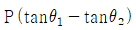
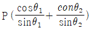
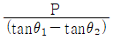
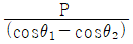
(정답률: 39%)
40. 송전선로의 저항은 R, 리액턴스를 X라 하면 다음의 어느 식이 성립하는가?
- R≥X
- R＜X
- R＝X
- R＞X
(정답률: 33%)
3과목: 전기기기
41. 전압 380[V]에서의 기동 토크가 전부하 토크의 186[%]인 3상 유도전동기가 있다. 기동 토크가 100[%]되는 부하에 대해서는 기동 보상기로 전압을 약 몇 [V] 공급하면 되는가?
- 280
- 270
- 290
- 300
(정답률: 21%)
42. 3상 동기 발전기를 병렬운전하는 도중 여자 전류를 증가시킨 발전기에서는 어떤 현상이 생기는가?
- 무효전류가 감소한다.
- 역률이 나빠진다.
- 전압이 높아진다.
- 출력이 커진다.
(정답률: 21%)
43. 1차 전압 3300[V], 권수비 50인 단상 변압기가 순저항 부하에 10[A]를 공급할 때의 입력[kW]은?
- 0.66
- 1.25
- 2.43
- 2.82
(정답률: 27%)
44. 직류 발전기의 전기자에 대한 설명 중 잘못된 것은?
- 전기자 권선은 대전류인 경우 평각동선을 사용한다.
- 전기자 권선은 소전류인 경우 연동환선을 사용한다.
- 소형기에는 반폐 슬롯을 사용한다.
- 중형 및 대형기에서는 가지형 슬롯을 사용한다.
(정답률: 31%)
45. 직류 직권 전동기를 정격 전압에서 전부하 전류 50[A]로 운전할 때, 부하 토크가 1/2로 감소하면 그 부하전류는 약 몇 [A]인가? (단, 자기 포화는 무시한다.)
- 20
- 25
- 30
- 35
(정답률: 23%)
46. 3상 유도전동기의 2차 저항을 m배로 하면 동일하게 m배로 되는 것은?
- 역률
- 전류
- 슬립
- 토크
(정답률: 38%)
47. 다음 동기기 중 슬립링을 사용하지 않는 기기는?
- 동기 발전기
- 동기 전동기
- 유도자형 고주파 발전기
- 고정자 회전기동형 동기 전동기
(정답률: 32%)
48. 60[Hz], 12극, 회전자 외경 2[m]의 동기 발전기에 있어서 자극면의 주변속도 [m/s]는 약 얼마인가?
- 34
- 43
- 59
- 62
(정답률: 36%)
49. 3상 유도전동기 원선도 작성에 필요한 기본량이 아닌 것은?
- 저항측정
- 단락시험
- 무부하시험
- 구속시험
(정답률: 25%)
50. 단상 전파정류로 직류 450[V]를 얻는데 필요한 변압기 2차 권선의 전압은 몇 [V]인가?
- 525
- 500
- 475
- 465
(정답률: 34%)
51. 단상 변압기 3대를 Y－△결선해서 3상 20000[V]를 3000[V]로 내려서 3000[kW], 역률 80[%]의 부하에 전력을 공급할 때 변압기 1대의 정격용량[kVA]은?
- 1250
- 1767
- 2500
- 3750
(정답률: 12%)
52. 동기 발전기의 병렬운전 조건에서 같지 않아도 되는 것은?
- 주파수
- 용량
- 위상
- 기전력
(정답률: 35%)
53. 전압이나 전류의 제어가 불가능한 소자는?
- IGBT
- SCR
- GTO
- Diode
(정답률: 46%)
54. 정격전압 6000[V], 용량 5000[kVA]의 3상 동기 발전기에서 여자 전류가 200[A]일 때, 무부하 단자전압이 6000[V], 단락전류는 500[A]이었다. 동기 리액턴스는 약 몇 [Ω]인가?
- 8.65
- 7.26
- 6.93
- 5.77
(정답률: 8%)
55. 변압기 단락시험에서 계산할 수 있는 것은?
- 백분율 전압강하, 백분율 리액턴스 강하
- 백분율 저항강하, 백분율 리액턴스 강하
- 백분율 전압강하, 여자 어드미턴스
- 백분율 리액턴스 강하, 여자 어드미턴스
(정답률: 27%)
56. 내철형 3상 변압기를 단상 변압기로 사용할 수 없는 이유는?
- 1차, 2차간의 각 변위가 있기 때문에
- 각 권선마다의 독립된 자기 회로가 있기 때문에
- 각 권선마다의 독립된 자기 회로가 없기 때문에
- 각 권선이 만든 자속이 3π/2위상차가 있기 때문에
(정답률: 29%)
57. 직류기의 다중 중권 권선법에서 전기자 병렬 회로수(a)와 극수 (P)와의 관계는? (단, 다중도는 m이다.)
- a＝2
- a＝2m
- a＝P
- a＝mP
(정답률: 38%)
58. 유도 전동기의 2차 동손(Pc), 2차 입력(P2), 슬립(s)일 때의 관계식으로 옳은 것은?
- P2Pcs＝1
- s＝P2Pc
- s＝P2/Pc
- Pc＝sP2
(정답률: 25%)
59. 440/13200[V] 단상 변압기의 2차 전류가 3.3[A]이면, 1차 출력은 약 몇 [kVA]인가?
- 22
- 33
- 44
- 62
(정답률: 34%)
60. 직권 전동기의 전기자 전류가 30[A]일 때, 210[㎏·m]의 토크를 발생한다. 전기자 전류가 90[A]로 되면 토크는 몇 [㎏·m]로 되는가? (단, 자기포화는 무시한다.)
- 1625
- 1758
- 1890
- 1935
(정답률: 23%)
4과목: 회로이론
61. a가 상수, t＞0일 때 f(t)＝eat의 라플라스 변환은?
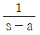
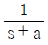
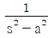
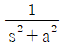
(정답률: 26%)
62. 각상의 임피던스가 Z＝6＋j8인 평형 Y부하에 선간전압 220[V]인 대칭 3상 전압이 가해졌을 때 선전류는 약 몇 [A]인가?
- 11.7
- 12.7
- 13.7
- 14.7
(정답률: 29%)
63. 대칭 n상 환상결선에서 선전류와 환상전류 사이의 위상차는 어떻게 되는가?
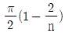
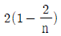
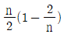
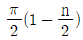
(정답률: 36%)
64. 다음 그림에서 V1＝24[V]일 때 V0[V]의 값은?
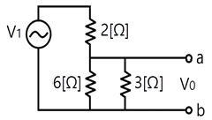
- 8
- 12
- 16
- 24
(정답률: 28%)
65. R＝100[Ω], L＝1/π[H], C＝100/4π[pF]가 직렬로 연결되어 공진할 경우 이 공진회로의 전압확대율 Q는?
- 2×103
- 2×104
- 3×103
- 3×104
(정답률: 23%)
66. 3상 불평형 회로의 전압에서 불평형률[%]은?
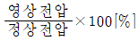
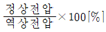
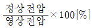
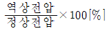
(정답률: 37%)
67. 다음 미분방정식으로 표시되는 계에 대한 전달함수를 구하면? (단, x(t)는 입력, y(t)는 출력을 나타낸다.)
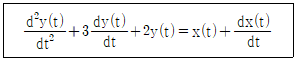
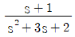
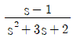
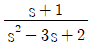
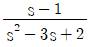
(정답률: 36%)
68. RL 직렬회로에 v＝150√2cosωt＋100√2sin3ωt＋25√2sin5ωt[V]인 전압을 가하였다. 이때 3고조파 전류의 실효치[A]는? (단, R＝5[Ω], wL＝4[Ω]이다.)
- 약 7.69
- 약 10.88
- 약 15.62
- 약 22.08
(정답률: 27%)
69. 3상 회로에 △결선된 평형 순저항 부하를 사용하는 경우 선간전압 220[V], 상전류가 7.33[A]라면 1상의 부하 저항은 약 몇 [Ω]인가?
- 80
- 60
- 45
- 30
(정답률: 44%)
70. RL 직렬회로에서 시정수의 값이 클수록 과도현상의 소멸되는 시간에 대한 설명으로 옳은 것은?
- 짧아진다.
- 과도기가 없어진다.
- 길어진다.
- 변화가 없다.
(정답률: 32%)
71. 일정 전압의 직류 전원에 저항 R을 접속하고 전류를 흘릴 때, 이 전류값을 20% 증가시키기 위해서는 저항값은 얼마로 하여야 하는가?
- 1.25R
- 1.20R
- 0.83R
- 0.80R
(정답률: 26%)
72. 전류가 전압에 비례한다는 것을 가장 잘 나타낸 것은?
- 테브난의 정리
- 상반의 정리
- 밀만의 정리
- 중첩의 정리
(정답률: 32%)
73. 분류기를 사용하여 전류를 측정하는 경우 전류계의 내부저항이 0.12[Ω], 분류기의 저항이 0.03[Ω]이면 그 배율은?
- 6
- 5
- 4
- 3
(정답률: 24%)
74. 어느 저항에 v1＝220√2sin(2πㆍ60t－30°)[V]와 v2＝100√2sin(3ㆍ2πㆍ60t－30°)[V]의 전압이 각각 걸릴 때 올바른 것은?
- v1이 v2보다 위상이 15도 앞선다.
- v1이 v2보다 위상이 15도 뒤진다.
- v1이 v2보다 위상이 75도 앞선다.
- v1이 v2의 위상관계는 의미가 없다.
(정답률: 38%)
75. V＝50√3－j50[V], I＝15√3－j15[A]일 때 유효전력 P[W]와 무효전력 Pr[Var]은 각각 얼마인가?
- P＝3000, Pr＝1500
- P＝1500, Pr＝1500√3
- P＝750, Pr＝750
- P＝2250, Pr＝1500√3
(정답률: 32%)
76. 그림과 같은 이상적인 변압기로 구성된 4단자 회로에서 정수 A와 C는 어떻게 되는가?
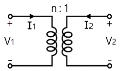
- A＝0, C＝n
- A＝0, C＝1/n
- A＝n, C＝0
- A＝1/n, C＝0
(정답률: 27%)
77. 60[Hz], 100[V]의 교류전압을 어떤 콘덴서에 인가하니 1[A]의 전류가 흘렀다. 이 콘덴서의 정전용량[㎌]은?
- 약 377
- 약 265
- 약 26.5
- 약 2.65
(정답률: 30%)
78. 비정현파의 성분을 가장 적합하게 나타낸 것은?
- 직류분＋고조파
- 교류분＋고조파
- 직류분＋기본파＋고조파
- 교류분＋기본파＋고조파
(정답률: 51%)
79. 다음과 같은 파형을 푸리에 급수로 전개하면?
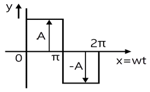
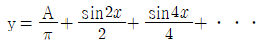
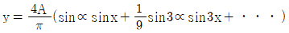
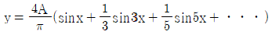
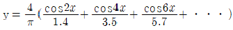
(정답률: 34%)
80. 그림과 같은 회로의 임피던스 파라미터는?
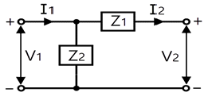
- Z11＝Z1＋Z2, Z12＝Z1, Z21＝Z1, Z22＝Z1
- Z11＝Z1, Z12＝Z2, Z21＝-Z1, Z22＝Z2
- Z11＝Z2, Z12＝-Z2, Z21＝-Z2, Z22＝Z1＋Z2
- Z11＝Z2, Z12＝Z1＋Z2, Z21＝Z1＋Z2, Z22＝Z1
(정답률: 36%)
5과목: 전기설비
81. 의료실 내에 시설하는 의료기기의 금속제 외함에 시설하는 보호접지의 접지저항값은 몇 [Ω] 이하로 하여야 하는가? (단, 등전위 접지가 아닌 경우)
- 5
- 10
- 50
- 100
(정답률: 28%)
82. 특고압 전선로에 접속하는 배전용 변압기를 시설하는 경우에 대한 설명으로 틀린 것은?
- 변압기의 2차 전압이 고압인 경우에는 저압측에 개폐기를 시설한다.
- 특고압 전선으로 특고압 절연전선 또는 케이블을 사용한다.
- 변압기의 특고압측에 개폐기 및 과전류 차단기를 시설한다.
- 변압기의 1차 전압은 35kV이하, 2차 전압은 저압 또는 고압이어야 한다.
(정답률: 21%)
83. 제1종 금속제 가요전선관의 두께는 몇 [㎜] 이상인가?
- 0.8
- 1.0
- 1.2
- 1.6
(정답률: 10%)
84. 철도 또는 궤도를 횡단하는 저고압 가공전선의 높이는 레일면상 몇 [m] 이상이어야 하는가?
- 5.5
- 6.5
- 7.5
- 8.5
(정답률: 35%)
85. 다음 ( )에 들어갈 적당한 것은?
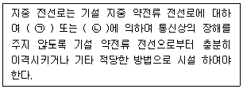
- ㉠ 정전용량, ㉡ 표피작용
- ㉠ 정전용량, ㉡ 유도작용
- ㉠ 누설전류, ㉡ 표피작용
- ㉠ 누설전류, ㉡ 유도작용
(정답률: 37%)
86. 다음 중 접속 방법이 잘못된 것은?
- 알루미늄과 동을 사용하는 전선을 접속하는 경우에는 접속 부분에 전기적 부식이 생기지 않아야 한다.
- 공칭 단면적 10mm2 미만인 캡타이어 케이블 상호간을 접속하는 경우에는 접속함을 사용할 수 없다.
- 절연전선 상호간을 접속하는 경우에는 접속 부분을 절연 효력이 있는 것으로 충분히 피복하여야 한다.
- 나전선 상호간의 접속인 경우에는 전선의 세기를 20%이상 감소시키지 않아야 한다.
(정답률: 30%)
87. 전기 울타리 시설에 대한 설명으로 옳지 않은 것은?
- 사람이 쉽게 출입하지 아니하는 곳에 시설할 것
- 전선과 이를 지지하는 기둥 사이의 이격거리는 2.5㎝ 이상일 것
- 전기 울타리용 전원장치에 전기를 공급하는 전로의 사용 전압은 250V 이하일 것
- 전선과 다른 시설물 또는 수목 사이의 이격거리는 20㎝ 이상일 것
(정답률: 25%)
88. 고압 가공전선로에 사용하는 가공지선은 지름 몇 [㎜] 이상의 나경동선을 사용하여야 하는가?
- 2.6
- 3.0
- 4.0
- 5.0
(정답률: 27%)
89. 전력보안 통신 설비인 무선 통신용 안테나를 지지하는 목주는 풍압하중에 대한 안전율이 얼마 이상이어야 하는가?
- 1.0
- 1.2
- 1.5
- 2.0
(정답률: 37%)
90. 발전소에서 사용하는 차단기의 압축공기장치의 공기압축기는 최고 사용압력 몇 배의 수압을 연속하여 10분간 가하였을 때 견디고 새지 않아야 하는가?
- 1.2배
- 1.25배
- 1.5배
- 1.55배
(정답률: 39%)
91. 금속제 지중 관로에 대하여 전식 작용에 의한 장해를 줄 우려가 있어 배류 시설에 사용되는 선택 배류기를 보호할 목적으로 시설하여야 하는 것은?
- 과전류 차단기
- 과전압 계전기
- 유입 개폐기
- 피뢰기
(정답률: 28%)
92. 지중 전선이 지중 약전류 전선 등과 접근하거나 교차하는 경우에 상호 간의 이격거리가 저압 또는 고압의 지중 전선이 몇 [㎝] 이하일 때, 지중 전선과 지중 약전류 전선 사이에 견고한 내화성의 격벽을 설치하여야 하는가?
- 10
- 20
- 30
- 60
(정답률: 25%)
93. 인입용 비닐절연전선을 사용한 저압 가공전선은 횡단보도교 위에 시설하는 경우 노면상의 높이는 몇 [m] 이상으로 하여야 하는가?
- 3
- 3.5
- 4
- 4.5
(정답률: 20%)
94. 사용전압이 22900V인 특고압 가공전선이 건조물 등과 접근상태로 시설되는 경우 지지물로 A종 철근 콘크리트주를 사용하면 그 경간은 몇 [m] 이하이어야 하는가? (단, 중성선 다중접지식으로 전로에 단락이 생겼을 때에 2초 이내에 자동적으로 이를 전로로부터 차단하는 장치가 되어있는 경우)
- 100
- 150
- 200
- 250
(정답률: 23%)
95. 중성점 비접지식 고압전로(케이블을 사용하는 전로)에서 제2종 접지공사의 접지저항값을 결정하는 1선 지락전류의 계산식은? (단, V는 전로의 공칭전압 [kV]을 1.1로 나눈 전압, L는 동일 모선에 접속되는 고압전로의 선로연장 [㎞]이다.)
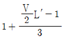
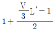
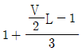
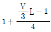
(정답률: 23%)
96. 특고압 가공전선과 가공약전류 전선 사이에 시설하는 보호망에서 보호망을 구성하는 금속선 상호간의 간격은 가로 및 세로를 각각 몇 [m] 이하로 시설하여야 하는가?
- 0.75
- 1.0
- 1.25
- 1.5
(정답률: 28%)
97. 태양전지 발전소에 시설하는 태양전지 모듈, 전선 및 개폐기 기타 기구의 시설방법으로 적합하지 않은 것은?
- 충전부분은 노출되지 아니하도록 시설할 것
- 태양전지 모듈에 전선을 접속하는 경우에는 접속점에 장력이 가해지도록 할 것
- 옥내에 시설하는 경우에는 금속관 공사, 가요전선관 공사로 할 것
- 태양전지 모듈의 지지물은 진동과 충격에 안전한 구조이어야 할 것
(정답률: 43%)
98. 옥내에 시설하는 조명용 전등의 점멸장치에 대한 설명으로 틀린 것은?
- 가정용 전등은 등기구마다 점멸이 가능하도록 한다.
- 국부조명 설비는 그 조명대상에 따라 점멸할 수 있도록 시설한다.
- 공장, 사무실 등에 시설하는 전체 조명용 전등은 부분 조명이 가능하도록 등기구수 6개 이내의 전등군으로 구분하여 전등군마다 점멸이 가능하도록 한다.
- 광 천장 조명 또는 간접조명을 위하여 전등을 격등회로로 시설하는 경우에는 10개의 전등군으로 구분하여 점멸이 가능하도록 한다.
(정답률: 26%)
99. 고압 보안공사에서 지지물이 A종 철주인 경우 경간은 몇 [m] 이하인가?
- 100
- 150
- 250
- 400
(정답률: 24%)
100. 케이블 트레이공사에 사용하는 케이블 트레이에 적합하지 않은 것은?
- 금속재의 것은 적절한 방식처리를 하거나 내식성 재료의 것이어야 한다.
- 비금속재 케이블 트레이는 난연성 재료가 아니어도 된다.
- 케이블 트레이가 방화구획의 벽 등을 관통하는 경우에는 개구부에 연소방지 시설을 하여야 한다.
- 금속제 케이블 트레이 계통은 기계적 또는 전기적으로 완전하게 접속하여야 한다.
(정답률: 33%)